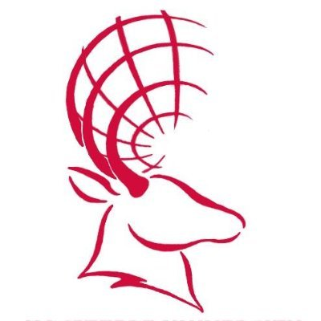

Education

Hacettepe University - Geomatics Engineering
2021–Present
Internship Experience
- Reşitoğlu Engineering – Field and map surveying (Summer 2025)
- Küçükçekmece LIHKAB – Cadastral and property measurement (Summer 2025)
Internship Experience
- Reşitoğlu Engineering – Field and map surveying (Summer 2025)
- Küçükçekmece LIHKAB – Cadastral and property measurement (Summer 2025)
Technical Skills
- Web Development: HTML, CSS, JavaScript
- Programming: Python (basic level)
- GIS Software: QGIS, Netcad, AutoCAD
- Web Mapping: OpenLayers, Leaflet
- Spatial Data Visualization & Analysis